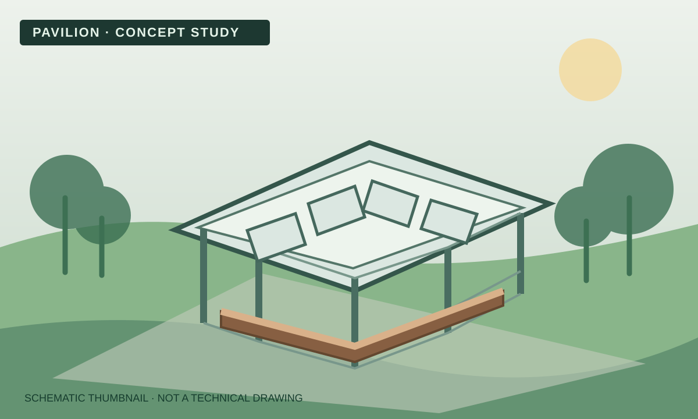

Project 5 · Pavilion
St George's Field Pavilion
A partially open shelter concept intended to provide protection from the elements while maintaining a visual connection with the surrounding landscape. The work included site analysis, precedent research, concept development, material selection and consideration of structure and construction.
- Revit modelling and design visualisation
- Plans, sections, elevations and construction detail
- Group decision-making, review and presentation